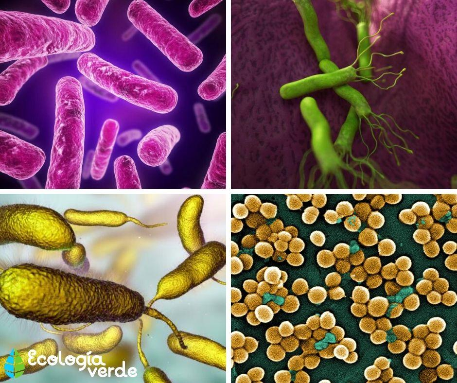

Monera o mónera es un reino de la antigua clasificación de los seres vivos para algunos sistemas, que agrupa a los organismos procariotas, siendo aún usada en muchos manuales y libros de texto. Se define como el reino de organismos microscópicos que habitan todos los ambientes y que están formados por una sola célula sin núcleo definido (célula procariota). Sin embargo, muchos especialistas consideran actualmente que esta denominación es obsoleta, pues se sostiene que en realidad se trata de dos grupos diferentes: arqueas y bacterias del reino monera (este último incluye las llamadas algas verde-azules o cianobacterias).
Los miembros del reino monera pueden ser muy diversos en su forma y sus modos de vida. Sin embargo, poseen algunas características mínimas que apuntan a su simpleza evolutiva y biológica, tales como:
Inicialmente, este reino se subdividía en dos categorías: bacterias y arqueas, cada una con su propia subclasificación. Sin embargo, tras el descubrimiento del ADN ribosomal, se pudo establecer una nueva clasificación procariótica en cuatro segmentos distintos:

Como dijimos antes, la reproducción de las moneras es siempre asexual. Puede ocurrir por fisión binaria (nunca por mitosis) o por conjugación o intercambio limitado de material genético (parasexualidad). Esto representa una desventaja evolutiva respecto a la reproducción sexual, que permite mayores márgenes de variedad genética.

Las moneras son formas de vida tremendamente resistentes, que se encuentran en prácticamente todos los hábitats posibles del planeta, formando colonias de individuos que explotan los recursos nutricionales a su alrededor. Podemos hallarlos en el intestino de la mayoría de los animales. Puede ser que se encuentren en perfecta simbiosis con ellos o, por el contrario, parasitando su sangre y sus tejidos en infecciones capaces de matarlos. También se encuentran en las aguas dulces y saladas, en los hielos polares, en el fondo marino en donde no llega la luz, e inclusive en las rocas minerales bajo tierra.

Dado que aún hoy en día podemos hallar moneras en hábitats hostiles a las demás formas de vida, se cree que su simpleza y carácter primitivo les permitió surgir en las hostiles condiciones que existían en nuestro planeta en sus primeras etapas. Es decir que el reino monera fue el primero en existir. Su comprensión es, por ende, la comprensión del origen mismo de la vida en nuestro planeta.